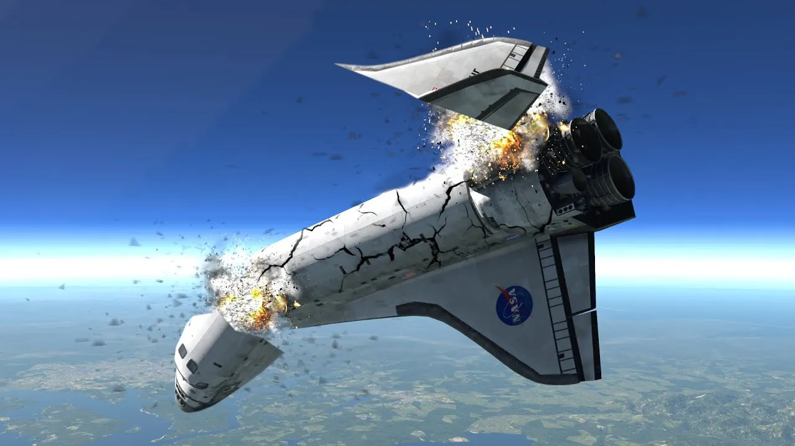

UZAY MEKIGI KAZALARI
-

Uzay Mekigi Kazalarındaki Sorun Ne? Insan Egosu mu?
ABD Ulusal Havacılık ve Uzay Dairesi, yılın en zor günlerini yaşıyor. Her yıl, sadece dört gün içinde tam üç anma töreni düzenleniyor ve hayatını kaybeden 17 astronot anılıyor. Challenger uzay mekiği, 37 yıl önce 28 Ocak 1987 tarihinde katı yakıt motorundaki teknik arıza nedeniyle ateşlenmesinden kısa bir süre sonra infilak etti. Kazada 7 astronot hayatını kaybetti. 20 yıl önce 1 Şubat 2003 günü, Columbia uzay mekiği atmosfere girdikten sonra infilak etti. Challenger’da olduğu gibi 7 astronot hayatını kaybetti. 56 yıl önce 27 Ocak 1967 tarihinde Apollo 1 uzay aracının testinde yaşanan yangında ise 3 astronot yaşamını yitirdi.Kazalar | Challenger Seksenli yıllarda dünya, uzay yarışından yeni çıkmıştı. Daha doğrusu iki devlet arasındaki soğuk savaş resmi olarak bitmişti. Bu ne demek biliyorsunuz! Ortada herhangi bir yarış yoksa uzaya çıkma ideali de yoktur. Amerika Birleşik Devleti, halkını uzay yarışı için gaza getirmemişti ya da belki de getirmek istememişti. Bu sebeple yarışacak ya da idealleştirecek bir şey bulamayan toplumun, uzay programlarına olan ilgisi bir hayli azalmıştı. 1984 yılında ABD Başkanı Ronald Reagan, “Teacher in Space” programını duyurdu. Projenin amacı isminden de anlaşılacağı üzere öğretmenleri uzaya götürmekti. Bunu yapmalarının sebebi öğrencileri bilim, matematik ve tabii ki uzayın keşfi konusunda teşvik etmekti. Bu doğrultuda Christa McAuliffe isimli bir öğretmen, binlerce aday arasından uzaya çıkacak ilk öğretmen olarak seçildi. Böylece Christa, NASA Uzay Programının 25. kalkışı, Challenger uzay mekiğinin ise 10. görevi olan STS-51-L görevine dahil edilmiş ilk sivillerden olacaktı. Görevin diğer aşamaları TDRS-1 uydusunu aktif etmek ve Halley kuyruklu yıldızını incelemek gibi birçok bilimsel çalışmada içeriyordu. Fırlatma günü tarihi anı izlemek üzere içlerinde astronotların yakınlarının da bulunduğu birçok insan Florida’ya akın etti. Sadece onlar değil onları takip eden milyonlarca insan ise ekranları başında aya ilk gidişten itibaren görülmemiş bir şeye tanıklık ediyordu. Hava şartları fırlatmaya uygun değildi. Fırlatma rampasında soğuktan ötürü buz sarkıtları oluşması bu durumun bir hayli göstergesiydi. Açıkçası bu gibi hava şartları yüzünden daha önce birçok kez ertelenmişti. Fakat 28 Ocak 1986 tarihinde kalkış için onay verildi. Başlangıçta her şey sorunsuz ilerledi. Görünürde bir aksilik çıkmamıştı. Challenger saatte 1600 km hızla irtifa kazanıyordu. Yaklaşık bir dakika sonra havacılıkta rüzgar sapması (wind shear) olarak bilinen bir rüzgar değişimi ile sarsılsa da rotasında herhangi bir aksilik olmamıştı. 19.000 fit yüksekliğe geldiğinde Max-Q (maximum dynamic pressure condition) adı verilen maksimum aerodinamik basınç periyoduna girdi. Max-Q: Bir hava-uzay aracının atmosferik uçuşunun, akışkanlar dinamiği toplam basıncı ile ortam statik basıncı arasındaki maksimum farka ulaştığı noktadır. Bir uçak için bu, uçuş zarfının minimum irtifa köşesindeki maksimum hızında gerçekleşir. (Dersini yeni aldım, elimde değil!) İşte ne olduysa bu an da oldu. Tam bu esnada kontrol merkezinden dünyanın kütle çekim kuvvetinden kurtulmaları için hız yükseltme emri verildi. VE BOOOM!!!
-
öne çıkanlar
 6, 2023
6, 2023
-
yakın zamanda olanlar
-

yabancı yasam
3, 2023 -

GALAXY
1, 2023
-